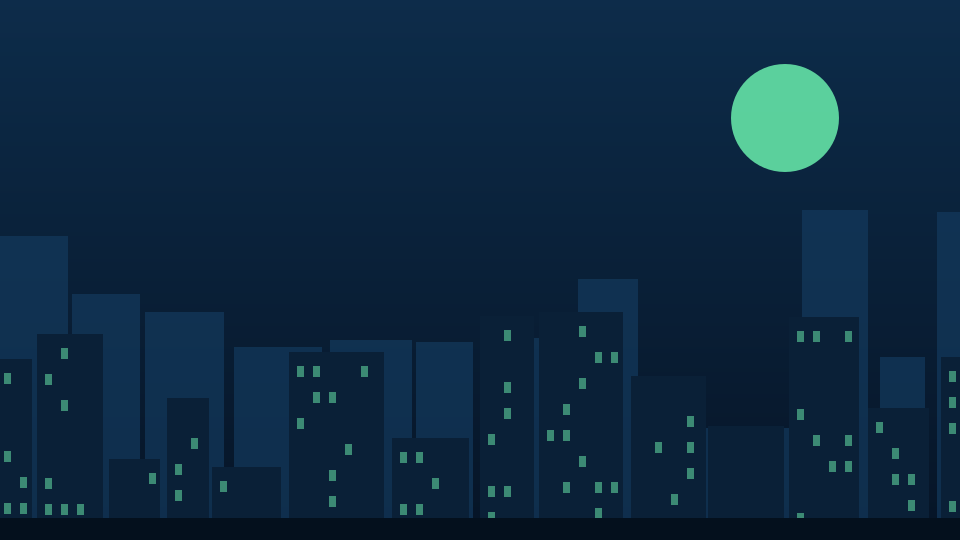

Illustration
🇳🇬 NIGERIA
Lagos
4.6% median gross yield
7 data points · Stears · 2026 (period not stated)
REAL ESTATE
Property prices, rents, yields and development trends across key African cities — with transparent sourcing and methodology.
WHAT THE DATA SAYS
Preview release: first verified yield data for Lagos, Nairobi, Johannesburg, Cape Town and Cairo. Gross yields here are before price growth, taxes and fees.
CROSS-COUNTRY COMPARISON
Median of each city’s published data points. Indicative net yield = gross yield minus 1.5 to 2.0 points, the publisher's own rule of thumb for costs, taxes and fees. Payback = 100 / net yield.
| City | Gross yield | Indicative net | Payback | 364-day T-bill | Data period |
|---|---|---|---|---|---|
| 🇳🇬 Lagos | 4.6% | 2.6–3.1% | 32–39 yrs | 18.8% | 2026 (period not stated) |
| 🇳🇬 Abuja | — | — | — | — | Collecting |
| 🇬🇭 Accra | — | — | — | — | Collecting |
| 🇰🇪 Nairobi | 6.4% | 4.4–4.9% | 21–23 yrs | 9.0% | Q1 2026 |
| 🇿🇦 Johannesburg | 13.6% | 11.6–12.1% | 8–9 yrs | 7.5% | Q2 2026 |
| 🇿🇦 Cape Town | 10.7% | 8.7–9.2% | 11–12 yrs | 7.5% | Q2 2026 |
| 🇪🇬 Cairo | 7.6% | 5.6–6.1% | 16–18 yrs | — | Q2 2026 |
| 🇷🇼 Kigali | — | — | — | — | Collecting |
CITY ATLAS
Images are labelled illustrations for now. Licensed photography replaces them city by city, each with a licence record.
7 data points · Stears · 2026 (period not stated)
No current verified yield yet
No current verified yield yet

Illustration2 data points · HassConsult · Q1 2026
3 data points · Global Property Guide · Q2 2026
3 data points · Global Property Guide · Q2 2026
5 data points · Global Property Guide · Q2 2026
No current verified yield yet
THE EVIDENCE
Grade B: published research. Asking prices are not transaction prices.
| City | Area / segment | Gross | Net | Payback | Publisher | Checks |
|---|---|---|---|---|---|---|
| Lagos | Chevron axisResidential, area average | 5.9% | 3.9–4.4% | 23–26 yrs | Stears2026 (period not stated) · published 16 Jul 2026 · grade B | Single sourceYield as published; basis (gross) not stated. Rents from Lagos Realty report. |
| Lagos | Ikota ElegushiResidential, area average | 5.0% | 3.0–3.5% | 28–33 yrs | Stears2026 (period not stated) · published 16 Jul 2026 · grade B | Single sourceYield as published; basis (gross) not stated. Rents from Lagos Realty report. |
| Lagos | OniruResidential, area average | 4.9% | 2.9–3.4% | 30–35 yrs | Stears2026 (period not stated) · published 16 Jul 2026 · grade B | Single sourceYield as published; basis (gross) not stated. Rents from Lagos Realty report. |
| Lagos | Victoria IslandResidential, area average | 4.6% | 2.6–3.1% | 32–39 yrs | Stears2026 (period not stated) · published 16 Jul 2026 · grade B | Single source2-bed rent ₦15m a year |
| Lagos | Osapa LondonResidential, area average | 4.3% | 2.3–2.8% | 36–44 yrs | Stears2026 (period not stated) · published 16 Jul 2026 · grade B | Single sourceYield as published; basis (gross) not stated. Rents from Lagos Realty report. |
| Lagos | Lekki Phase 1Residential, area average | 4.0% | 2.0–2.5% | 41–51 yrs | Stears2026 (period not stated) · published 16 Jul 2026 · grade B | Single source2-bed rent ₦10m a year |
| Lagos | IkoyiResidential, area average | 3.1% | 1.1–1.6% | 63–92 yrs | Stears2026 (period not stated) · published 16 Jul 2026 · grade B | Single source2-bed rent ₦17.25m a year |
| Nairobi | Suburbs (houses)Residential, suburban average | 7.4% | 5.4–5.9% | 17–19 yrs | HassConsultQ1 2026 · published Apr 2026 · grade B | Single sourceAverage suburban house rent KSh201,832 a month. |
| Nairobi | Satellite townsResidential, satellite-town average | 5.3% | 3.3–3.8% | 26–30 yrs | HassConsultQ1 2026 · published Apr 2026 · grade B | Single sourceAverage rent KSh64,765 a month. |
| Johannesburg | City-wideStudio / 1-bed | 13.9% | 11.9–12.4% | 8 yrs | Global Property GuideQ2 2026 · published May 2026 · grade B | Cross-checked$37,100 · $430/month |
| Johannesburg | City-wide3-bed | 13.6% | 11.6–12.1% | 8–9 yrs | Global Property GuideQ2 2026 · published May 2026 · grade B | Cross-checked$97,300 · $1,100/month |
| Johannesburg | City-wide4+ bed | 11.2% | 9.2–9.7% | 10–11 yrs | Global Property GuideQ2 2026 · published May 2026 · grade B | Cross-checked$195,400 · $1,830/month |
| Cape Town | City-wideStudio / 1-bed | 12.4% | 10.4–10.9% | 9–10 yrs | Global Property GuideQ2 2026 · published May 2026 · grade B | Cross-checked$65,100 · $670/month |
| Cape Town | City-wide2-bed | 10.7% | 8.7–9.2% | 11–12 yrs | Global Property GuideQ2 2026 · published May 2026 · grade B | Cross-checked$121,400 · $1,080/month |
| Cape Town | City-wide3-bed | 5.5% | 3.5–4.0% | 25–29 yrs | Global Property GuideQ2 2026 · published May 2026 · grade B | Cross-checked$334,600 · $1,520/month |
| Cairo | New Cairo2-bed | 8.1% | 6.1–6.6% | 15–16 yrs | Global Property GuideQ2 2026 · published Apr 2026 · grade B | Single source$151,300 · $1,020/month |
| Cairo | Mohandessin3-bed | 10.1% | 8.1–8.6% | 12 yrs | Global Property GuideQ2 2026 · published Apr 2026 · grade B | Single source$119,900 · $1,010/month |
| Cairo | Sheikh Zayed2-bed | 7.6% | 5.6–6.1% | 16–18 yrs | Global Property GuideQ2 2026 · published Apr 2026 · grade B | Single source$113,400 · $720/month |
| Cairo | 6th of October2-bed | 5.6% | 3.6–4.1% | 25–28 yrs | Global Property GuideQ2 2026 · published Apr 2026 · grade B | Single source$178,900 · $830/month |
| Cairo | Heliopolis2-bed | 5.3% | 3.3–3.8% | 26–30 yrs | Global Property GuideQ2 2026 · published Apr 2026 · grade B | Single source$92,300 · $410/month |
QUESTIONS THIS PAGE WILL ANSWER
Net yield plus price growth vs stocks, T-bills and inflation, in local currency and USD.
City return against each country’s main equity index and the T-bill yields on Money & Rates.
Price ÷ net annual rent. The table below shows a range using the publisher’s cost rule of thumb.
Gross yield by district and type; cap rates where research reports publish them.
Nightly rate × occupancy × 365, less platform fees, cleaning and management, against long-let net yield.
A published scoring model: yield, growth, liquidity, FX risk, transaction cost, legal clarity.
One table, one definition, one as-of date per figure.